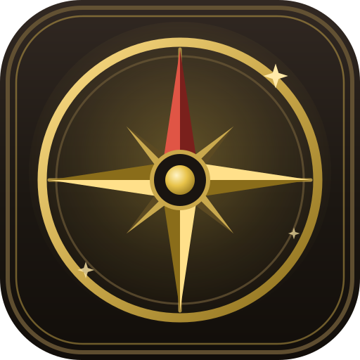

Kronika navštívených míst se vymaže – počítadlo se vynuluje a úroveň se vrátí na 1.
⭐
Postup na úroveň 2!
🏆 Světový žebříček

Pxplore
Svět kolem tebe je plný míst, kolem kterých chodíš bez povšimnutí – památky, vyhlídky, zákoutí i skryté poklady tvého okolí. Vydej se ven, objevuj je a staň se legendárním průzkumníkem.